More Integrals¶
There are many fun and awesome things that can be done with integrals. Last time we looked into calculating areas and 3D volumes, but you'll be also amazed by everything else we can do.
Be sure to read the derivative chapter and the integral chapter first. This chapter uses things I showed in those chapters.
Arc Length¶
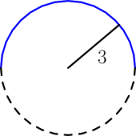
The length of the blue arc in the above image is quite easy to calculate.
We can just complete it to a full circle, and we know its perimeter
length is 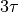 so half of
that is 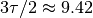. But that's just a special case. What if
we want to calculate the length of an arc taken from any  graph?
graph?
Let's assume that  is a function that has a
derivative, and say
that the length of an arc to
is a function that has a
derivative, and say
that the length of an arc to  is 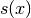, just like we did with
areas. We get this:
is 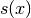, just like we did with
areas. We get this:
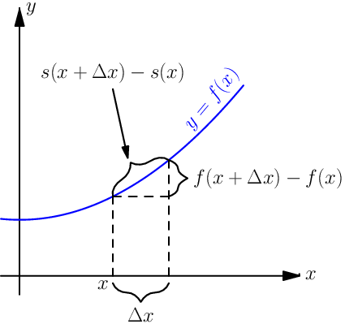
Now you can see a little triangle in the picture so we can apply the Pythagorean theorem, but as usual, the result is not perfectly accurate because the graph is not guaranteed to be straight. We get this mess:
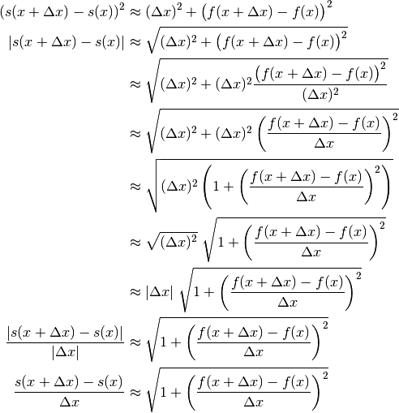
In the last step I assumed that we moved right so  was
positive, and obviously the change of the arc length 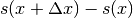
was also positive.
was
positive, and obviously the change of the arc length 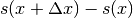
was also positive.
The smaller the bit of the curve we're looking at, the less curvy it is and the more accurate this is:
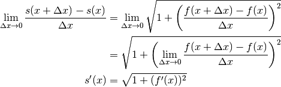
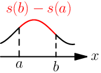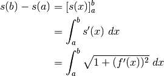
That took a while, but we're done! This arc length thing is yet another one of my favorite math stuff.
Example: More Jumping¶
Problem
A player jumps along the parabola 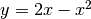. How long is the arc that the player's path traces above the x axis?
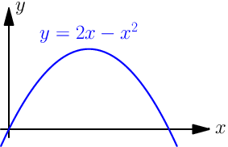
First things first – let's figure out when the graph hits the axis;
that is, when :
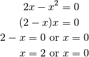
Now we can just plug in  , and 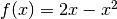 to our formula.
, and 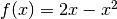 to our formula.
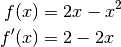
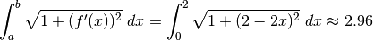
Use your favorite symbolic calculation library for calculating the integral. I couldn't do it by hand, but I got it done with sympy:
>>> from sympy import *
>>> init_printing()
>>> x = Symbol('x')
>>> integrate(sqrt(1 + (2-2*x)**2), (x,0,2))
asinh(2)
──────── + √5
2
>>> float(integrate(sqrt(1 + (2-2*x)**2), (x,0,2)))
2.957885715089195
In cases like this I don't recommend worrying about what asinh is.
The important thing is that we can convert the answer to a float.
Calculating the precise value of the integral with sympy takes a while, but it does it faster if we tell it to just evaluate the whole thing with floats. The answer is not as precise, but the error is hardly noticable.
>>> Integral(sqrt(1 + (2-2*x)**2), (x,0,2)).evalf()
2.95788571508920
Boring Trapezoid Area¶
This section has nothing to do with integrals, but we need it in the next section. Let's find the area of shapes like this:
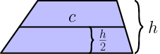
The line with length  is centered between the topmost and the
bottommost line, and all horizontally drawn lines are parallel with each
other.
is centered between the topmost and the
bottommost line, and all horizontally drawn lines are parallel with each
other.
Let's cut off and rotate the ends:
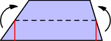
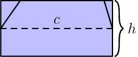
The area is obviously just .
My Thick Line Area Thing¶
I'm sure someone has invented this before me, but I haven't found a name for this yet. That's why the title above is like it is.
Let's try to figure out how to calculate an area like this if we know
nothing but  and
and  :
:
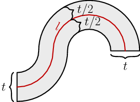
The area of a by rectangle is just . Let's see if it works
when things are curved like this. Note that the distance between the red
line and the black lines is always the same; calculating this would be
more difficult if the thickness wasn't the same everywhere.
Let's start by thinking about a small, trapezoid-shaped piece of the area like in the image at right. Now everything is quite straight-forward and a lot like in the circle example.
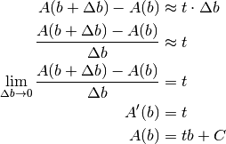
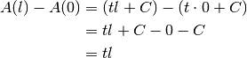
Example: Circle Area #2¶
This section assumes that you know what  is. Click
here
if you don't.
is. Click
here
if you don't.
So far we have calculated a circle area with an integral, but now we can do it without thinking about any integrals.
This thing's area is obviously :
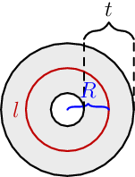
If we set 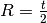, the inner circle's radius becomes 0:
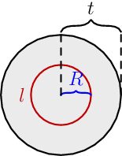
The area is 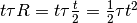.